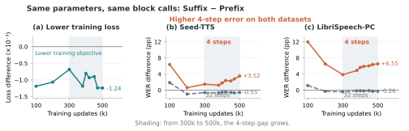

FLOW-MATCHING TEXT-TO-SPEECH
Where to Loop
Same depth. Different places to share.
Reusing Transformer blocks saves parameters. Where we reuse them changes how speech generation responds to the sampling budget.
01 / THE DESIGN
One depth. Six ways through it.
Full loops change how much is shared.
Partial loops change where sharing happens.
Each row is one network evaluation at a fixed flow time. Every layout executes 18 block calls. Prefix, Middle and Suffix each store 12 unique blocks and 108.4M parameters.
02 / LISTEN & COMPARE
Same sentence. A different loop.
Compare the shared positions, then switch
between four and 32 sampling steps.
TEXT TO SYNTHESIZE
Loading the selected sentence…
Reference transcript
How these examples were chosen
Six Seed-TTS test-en examples, selected reproducibly before inspecting model scores: two each from short, medium and long target-duration groups, with distinct reference prompts. Every model uses the same text, reference and inference seed (0), its 500k EMA checkpoint, Euler sampling, CFG 2 and sway −1. The original WAV files are served without trimming or loudness adjustment.
These clips illustrate individual outputs. Full-test-set means are shown below; this demo is not a listening-test result. Sample selection and audio hashes are available in the sample manifest and checksum record.
03 / THE RESULTS
The budget changes the ranking.
Word error rate vs. sampling steps
Lower is better
Curves use one fixed inference seed per dataset (666 / 0). The table averages four / three seeds, so its endpoint means differ.
The clearest placement gap is at four steps. At eight steps, the Prefix–Suffix mean ordering has already reversed.
Quality, parameters and memory
All six layouts · 500k updates · EMA weights
| Layout | Params M | Memory MB | RTF ↓ | WER % ↓ | SIM-o ↑ | UTMOS ↑ |
|---|
Bold marks the best displayed quality mean, including ties. Resource columns always use Seed-TTS at 32 steps: H100, fp32, batch one. Memory is peak allocated GPU memory including the vocoder. RTF is total sampling time ÷ generated duration, excluding vocoding. UTMOS is an automatic quality predictor.
FULL ×2 VS. BASELINE
Less memory.
Similar sampling time.
Nine blocks, visited twice. Shared weights and optimizer states reduce storage; the network still executes 18 block calls.
Training memory and measurement details
Training uses eight GPUs and accumulation of two. The table reports the largest rank-0 cumulative process peak in records from 400k–500k updates, not a minimum GPU requirement or the maximum across all ranks. Prefix and Suffix trained on H200; the others used H100. Sharing does not remove activations for the 18 executed block calls.
| Layout | GPU ×8 | Allocated GiB | Reserved GiB | Seconds / update |
|---|
Full ×2 has lower allocated memory but higher reserved memory than the baseline. Sampling RTF comes from one pass per layout on the same GPU model; the small timing differences do not establish a speed advantage. The results data include the measurement protocols and aggregate values.
Another view: lower training loss does not select the better four-step layout.
Across nine common checkpoints, Suffix has lower logged training loss than Prefix and higher four-step WER on both test sets. The four-step gap widens from 300k to 500k updates.

Training loss uses online weights; speech evaluation uses EMA. There is one training run per layout. This is evidence about the observed rankings, not a proven mechanism of the velocity field.
ABOUT THE STUDY
Choose the position
with the operating point.
Prefix, Middle and Suffix offer different quality trade-offs. Middle has the lowest 32-step WER means on both datasets; Prefix leads four-step WER on Seed-TTS. Suffix has the strongest 32-step speaker similarity among the partial loops.
Results cover one training run per layout and the stated Euler / CFG / sway setting. A current-model listening test, independent retraining and alternative sampling grids remain open evaluations.